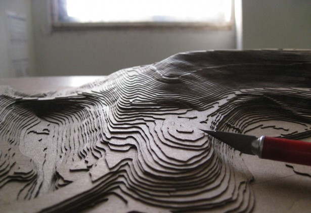
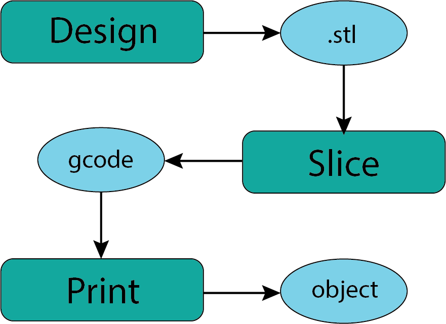
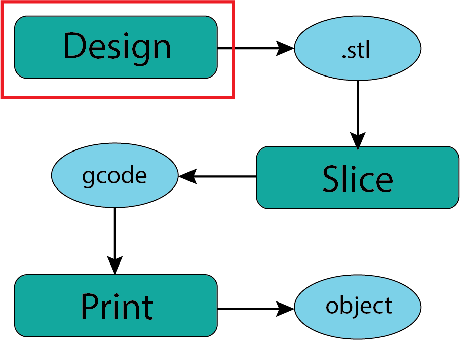
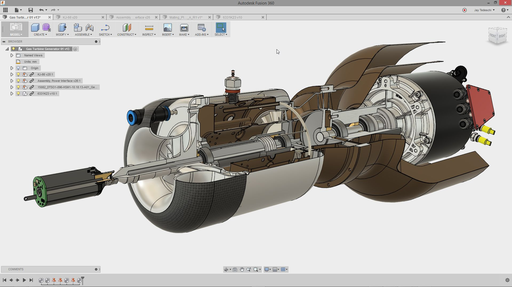
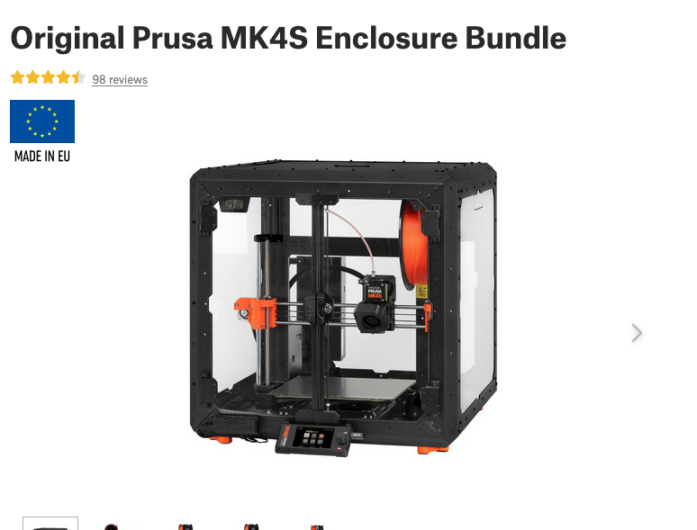
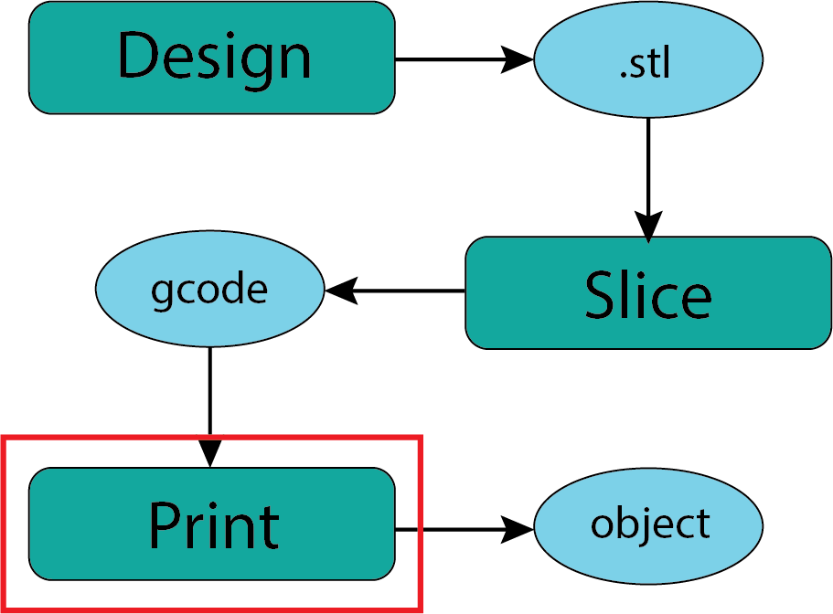

Why?#
Makerspaces are new to the Deschutes Public Library (DPL) system. The first of these community spaces is in the Redmond Branch Library. In the Redmond Makerspace there a number of resources that are planned to be available to patrons as the makerspace develops. The 3D printers are one of those resources. This is a tool to guide patrons in accessing and using the 3D printers. Your feedback about this guide is always welcome as we work to improve your experience with the 3D printers in the makerspace. Feel free to share your insights with us with ushere.
Important Note:#
I feel like it is important to note that this presentation is meant to be a guide to the overall 3D printing process. THIS IS NOT A TUTORIAL:) I will link various resources that are useful tutorials based on our (the authors) experiences. There will be many more that you can find independently if you wish.
Who is the Audience?#
This guide is primarily intended to serve the patrons of the Deschutes Public Library (DPL) system though many of the processes and tools will be relevant to any user of 3D printers. Having said that, we hope that this guide is usedful to the general public as well. There is an overwhelming amount of information about 3D printing on the interwebs and this guide seeks to focus on skills needed to get started successfully in the DPL Makerspace(s). Once you have started you will find that the learning never stops.
Structure:#
This guide is being created in jupyter{book}. This creates a book like object which can be displayed as a web page or exported as a pdf document and is relatively easy to update and keep track of. A link to the current pdf of the guide can be found here - not available yet:)
Creative Commons:#
I am deeply attached to the open source movement so you will not be surprised that this work is licensed under the CC Atribution-ShareAlike 4.0 International License. I well endeavor to be sure that I have your explicit permission to share any content you contribute to this book.

This work is licensed under a Creative Commons Attribution-ShareAlike 4.0 International License.
3D Printers at the Deschutes Public Library#
The pupose of this guide is to explore the basic features of the 3D printing, the core elements of the workflow when using 3D printers, and the tools that are available for creating and printing objects. This is by no means a complete guide but is intended to provide enough information to safely begin your 3D printing journey at the DPL Makespace.
DPL Makerspace: Redmond#
Lets start by making sure that you know how to find the Makerspace page on the DPL website. At this time you can access the Makerspace page via the Services tab as shown below.

Fig. 1 DPL Dropdown Menu#
Scrolling down you will find the listing for the Makerspace hours. This is relevant in the context of the 3D printers since whatever projects you wish to work on will need to be comppleted during the makerspace hours.

Fig. 2 DPL Makerspace Hours#
Scrolling further down there is a section for Reservable Equipment. At this moment this section is not fully implemented but this is where you will be able to reserve time on one of Makerspace 3D printers.

Fig. 3 Makerspace Equipment Reservation#
High Altitude View#
Working with 3D printers is a learning process that never stops for a variety of reasons. For this presentation I want to give a clear sense of the basic processes and skills needed to get started. Once you have a very basic comfort with the process then your skills will grow as you try prints or techni that you hear about or read about on the interwebs. Be curious and you will be delighted to see your skills grow. Because it’s only 2 min long (plus the irritating ads) we’ll watch this video which is linked at the bottom of the DPL MakerSpace page.
With such a general goal for this presentation here is what we’re going to touch on.
A Short History
The Workflow
I: CAD Options
Ia: Downloading Printable Files
II: ‘Slicing’ the File
Our 3D Printers
III: Printing the .gcode
FAQ
Short History of 3D Printer Movement#
3D printing is a manufacturing process known as additive manufacturing. There are roots of the process we now use going back to the 1960’s and 70’s. The first versions of modern 3D printing machines came into being in the late 1980’s and began to be manufactured in larger quantities through the 1990’s. The personal FDM (fused deposition modeling) printer movement is largely built on the work of Dr Adrian Bowyer and his colleagues through the RepRap (replicating rapid prototyper) project. A good summary of this history can be found here
RepRap Printers#
The 3D printers at the DPL Makerspaces are descended from RepRap printers. ReRap is an open source hardware project that provides guidance and files needed to build your own 3D printer from scratch. If you find you are intrigued by this project here is the RepRap project homepage. The image below shows a small sampling of the 3D printer projects that are documented on the RepRap site.

Fig. 4 RepRap Machines#
Josef Prusa was invovled in the RepRap project relatively early and designed a number of variations of machines of which the i3 is one.

Fig. 5 Josef Prusa#
The Prusa MK4 printers that we use in the DPL (Redmond) Makerspace are Prusa MK4S machines and are modeled on that original RepRap Prusa i3.

Fig. 6 Prusa MK4S#
The work of the RepRap project along with evangelists like Josef Prusa has led to the remarkable accessibility of 3D printers, particularly FDM printers, for all of us. It is also a testament to the long commitment of these creators to the open hardware and open software movement. Even today Josef Prusa will provide you, from his business website, all the files you need to create and build your own 3D printer just like the MK4S. There are items like the motors, bearings, electronics and cables that you would need to buy as well but nothing stops you from doing that.
Workflow Overview#
The general workflow for additive manufacturing (3D printing) is typical of all code driven manufacturing like CNC, Cricut, Laser Cutters, CNC routers and others. For our purposes I’m going to going to suggest we think of the workflow as having three (3) broad stages.
I: Design#
In the context of modern manufacturing and 3D printing the starting point is the design of the object. This is commonly accomplished using Computer Aided Design (CAD) tools. CAD tools are amazing and wonderful and have a long and sometimes steep learning curve.
If you are new to 3D printing there is very little reason for you to worry about learning and using CAD software. The reasons for this will become apparent shortly.
OUTPUT:
The output of this stage of the workflow is generally an stl file (.stl). This is the file type that is most commonly passed to the next stage of the workflow.
II: Slicing#
A transformative idea from the beginings of 3D printing was the idea that you can take any object and transform it into a stack of individual slices. The manufacturing process then creates each layer sequentially on top of the previous layers. A version of this idea you may have seen is creating a topographic model of a mountain using layers of art board as shown below.
{kind=link}

Fig. 7 Topographic Model#
I think this is a helpful way to visualize the slicing process because it also illustrates some of the compromises that are inherent in the 3D printing process.
As with many complex processes like this software is used to create the shape of the layers of the object you want to print. There are a variety of open source and proprietary tools for slicing objects. For almost any object you might wish to print in the library makerspace you will need to execute this step.
OUTPUT:
Once the slices have been created then they need to be translated into the commands that drive the printer. The industry standard for controling manufacturing machines of many types is called gcode. These are a set of commands that the 3D printer (or robot or welder or router) will interpret to create the object. This is a form of computer code and is the final stage of the slicing process. This is the file that is passed to the printer.
III: Printing#
Once you have the ‘gcode’ in hand as a digital file then all that remains is to feed that code to the machine and step back. This would be the ideal of course and the reality is that you might need to prepare the machine in certain ways to be ready to print your object. You might need to load a particular filament or check that the extruder seems to be working correctly. It’a perhaps helpful to think of this a little like your coffee maker. When all goes well you just need add the grounds (or K-cup) and some water and hit the start button. On the other hand, sometimes your coffee maker needs a little more attention or misbehaves in some way. If all goes smoothly you remove the object you have created from the printer, put the printer to bed, and go enjoy what you have made.
OUTPUT:
Not surprisingly the output of the printing process is the printed object. You may not be done at that point since there is the possibility of post processing or removal of supports used in the printing process.
Workflow Summary#
{kind=link}

Fig. 8 Workflow#
Now we will take a little closer look at each of these stages in the workflow.
Design: CAD Overview#
{kind=link}

Fig. 9 Design#
Almost all manufacturing processes begin with some form of design software. For three dimensional objects this is often called CAD (Computer Aided Design). The big names in CAD software are Solidworks, Autodesk (the parent of Fusion 360), and open source packages like OpenSCAD and FreeCAD. There are a host of other software packages that seem to pop up out of nowhere. What works for you is what matters.
Like all complex software the learning curve is challenging but the rewards are great. If you have any connection to education (a .edu email address) Fusion 360 is relatively accessible through an education license. Otherwise cost is an issue. Because I have an education connection I use Fusion 360 but I would not be able to afford it otherwise.
The major CAD software packages can do truely amazing things and these days they can even be animated to make sure everything will work and actuate as you intended. Below is an extreme example.
{kind=link}

Fig. 10 Fusion Example#
TinkerCAD#
For relatively simple geometries you can get started in CAD design using Tinkercad - its FREE!. Tinkercad is a lightweight (low complexity) product from the same folks who make Autodesk and Fusion 360. If you are interested in designing your own objects this is a reasonable starting point. Setting up an account is easy and the learning curve is gentle.
Design Output#
The output of your design process that is needed to move towards a 3D printed object is the .stl file. In all of the CAD software I have worked with this is a separate file (exported) from the design files that are native to the software. Like a .pdf file the .stl file is a stable and widely understood file format for describing 3 dimensional objects. Because the 3D printing community has grown largely from an open source/open hardware ethos you will find that many folks have designed objects they think are interesting or useful and then made the .stl files of their design available for others to use. Using designs created by others is a great way to learn about 3D printing and participate in the community. This is what we will explore next.
Downloading Printable Files#

Fig. 11 Downloading .stl Files#
There is a vibrant community of people who work with 3D printers that is typically generous with their designs and insights. You can see this from the seemingly endless YouTube videos out there. For those of us new to the 3D printing world a great entry point is to download one of these shared designs to print. All that is generally asked of you is to acknowledge the designer anytime you show someone your print.
Where to find files?#
It is my sense in looking through the various sharing sites that I frequent that many printable objects show up on all the sites. I will introduce you to the ones that have been most useful to me but you may find sites dedicated to objects that are of specific interest to you. The process will be generally the same.
Thingiverse#
I feel like thingiverse was one of the first large sharing sites that I became aware of. We will go and take a look to get a sense of what’s out there.
Printables#
Once I started working with Prusa products I found that the Printables community is also a great place to find interesting and useful things to print.
These are the two that I have explored most but there are many others. Be aware that there is a growing tendency to charge for designs which is slightly antithetical to the origins of the movement but mostly the costs are small and reasonable for the effort the designer has put out.
What is the Process?#
Navigate to the object page which will look something like those below. You’ll notice that the format is pretty consistent across almost all platforms. There is a description, a link to the relevant files, comments from folks who have printed this file, and other related objects and files.
Generall valuable to take the time to read the description provided by the creator. This often has suggestions for printer settings, materials, and applications. This description combined with any relevant comments helps me decide if this is a model I wish to download/print.
Object Page:

Fig. 12 Thingiverse Object#

Fig. 13 Printables Object#
Files Page:
For the Printables object there is just a single file for the entire object. It is nice in this case since it keeps the parts together. In some cases it’s challenging if you want to only print some parts as opposed to the whole thing.

Fig. 14 Printables File#
The Thingiverse object has a different file structure because most people will want to choose the motor mount that matches their specific need. There are a lot of files here but you’re most likely to only pick one to download.

Fig. 15 Thingiverse Files#
You will notice there are two different types of files listed. The .stl file is the one you want for printing. The .step file is a form of CAD file which you could import into your own CAD software (probably) if you needed or wanted to redesign some aspect of the model. Generous of drizztguen77!
Comments:
Before I download a file for a particular object I generally read the comments that other people have left. This is a great way to be alerted to considerations with the print. In this case one of the comments/questions was about the need for supports while printing (we will discuss shortly). Very handy information.

Fig. 16 Printables Comment#
Sometimes you just get some insights into unexpected things that other people do. It appears this user printed the object upside down which didn’t work out well. Probably not as silly as it looks since I can think of some ways this might happen if you weren’t paying attention.

Fig. 17 Printables Comment#
The comments on the Thingiverse page are more innocuous but still helpful in evaluating the potential for this model as well as other material options.

Fig. 18 Thingiverse Comments#
Download the .stl:
When you have decided what you want to print then simply download the .stl file to your personal computer. I’m assuming you know where to find that downloaded file for the next stage of our workflow.
Other File Types:
You will encounter a variety of other file types that creators post. In the begining the general recommendation is to only download the .stl file until you have more experience. As you gain experience you will recognize different file types when they might be useful for you.
Slicer Overview#

Fig. 19 Downloading .stl Files#
“Slicing” is the process of taking the output of a design process (usually an .stl file) and ‘slicing’ it into layers suitable for your target manufacturing process. In my experience this may be the most technically important step in the process of using the DPL Redmond Makerspace printers. Fortunately this is a process that you can perform on your own computer at home and we are delighted to provide support and guidance when you come into the makerspace.
Slicing Software:#
There are a range of slicer software packages. The options include Prusa Slicer, Ultimaker Cura, and Slic3r which are probably the 3 most common. If you can use one you can probably find your way around one of the others. I’m sure there are plenty of custom in house slicers for folks like the ones at Relativity and Creality. For a variety of reasons we will focus on Prusa Slicer which is open source, typical of all slicers, and well aligned with the printers we use in the makerspace.
Prusa Slicer#
Prusa Slicer is free and available to anyone and runs on all standard operating systens (Mac, Windows, and Linux). Our general recommendation would be to download and install the slicer software on your personal computer. We do have laptops available at the library with Prusa Slicer installed.

Fig. 20 Downloading Prusa Slicer#
Once you have installed Prusa Slicer you will find helpful tutorial resources on the Prusa Slicer Support page Support materials at Prusa tend to be articles with embedded video to illustrate particular features or tasks. If you prefer article style tutorials this First Print with Prusa Slicer might work for you. If you are more of a video person here is a 20 min Prusa Beginner Tutorial from 3D Revolution that is also linked at the bottom of the MakerSpace page. There are many many others.
When you open Prusa Slicer for the first time you will need to do some set up (configuration) that is covered in the tutorials. Once that is done you’ll see a desktop that looks something like this (yours may look slightly different depending on the version and your operating system)

Fig. 21 Prusa Slicer Desktop#
Prusa User Mode:#
In the very top right of the desktop is a dropdown menu identifying the “user mode”. If you are brand new to 3D printing we would recommend choosing the Beginner Mode. Be careful of the Expert Mode since it will permit you to do things that can damage the printer. Note: The names of these modes have changed over time but these are the current names.

Fig. 22 Prusa Slicer User Mode#
In this presentation I am only going to highlight the three primary choices you will need to make in the slicer software to prepare your 3D model (from an imported .stl file).
The Big 3:#
In the top right corner of the desktop are the 3 primary choices you will need to make. There are many other choices you might make that will impact the success of the print but these 3 in the top right are the ones that can have large impacts.

Fig. 23 Prusa Slicer Big 3#
Printer Choice#
Starting from the simplest choice which is the bottom of the 3 - which printer are you intending to use for your print. The one shown in the image is NOT the correct one for our printers. The options you have available will depend on how you configured Prusa Slicer. If the printer you wish to use is not on the dropdown menu revisit the configuration process. FOR OUR PRINTER LOOK FOR “Prusa MK4S 0.4 nozzle”

Fig. 24 Prusa Slicer Printer#
Filament Choice:#
The second choice is also pretty straight forward which is to identify the filament you will be using. Slicer uses this to determine a variety of characteristics of the printer but most importantly the temperature of the hot end and the bed temperature. FOR OUR PRINTER LOOK FOR “Jessie PLA”. We may eventually offer other filaments but for now only PLA filaments will be available. You do not have to specify the color since that does not affect (generally) the performance of the printer.

Fig. 25 Prusa Slicer Filaments#
Print Settings Choice:#
The choice of Print Settings is the one that will greatest impact on the characteristics of your print and the time it takes to complete the print. The thinner layers or the higher the detail/quality expectations the longer the print will take. Since you will need to complete any print in the makerspace while we are open (2-3 hrs maximum) these are the settings that will have the most impact on your ability to complete a print.

Fig. 26 Prusa Slicer Print Settings#
Final Output: gcode#
The final output from the slicer software will be a gcode file that contains the machine specific code that is interpreted by the printer to execute the print. This gcode (the suffix of the file generated for our MK4S printers will be .bgcode) is then copied to a flash drive which is loaded onto the printer. Because the gcode is specific to each 3D printer we will be cautious as we verify that any gcode file you bring in is safe for our printers.
MK4 Overview#
We will primarily focus here on the particular type of printer that is available in the Deschutes Public Library makerspaces. As our equipment changes this page will hopefully be updated to stay current.
Current: Prusa MK4S#
Last Updated: 9/30/2025
The Pruse MK4S with an enclosure is our current standard FDM printer in the DPL Redmond Makerspace.
{kind=link}

Fig. 27 Prusa MK4S Printer#
Printing Overview#
{kind=link}

Fig. 28 Downloading .stl Files#
In some ways the 3D printing process is superficially the simplest of the steps in the process of creating an object. Much like creating a document the effort is mostly in getting the file prepared for the printer.
It is likely that the most common setup task for making a 3D print in the makerspace will be changing the filament to whatever color you would prefer. Because this will take place in the makerspace with the support and guidance of makerspace staff you should not be concerned about this.
Printing Process Basics:#
The overall process will look something like this.
Reserve the use of the printer on the DPL Makespace page.
Find a makerspace staff member to access the 3D printer
Go through our verification process (not implemented yet) to assure appropriate file types and gcode.
In the beginning we may ask that you also bring in your Prusa Slicer file (.3mf) so we can open it up and check settings.
Load desired filament.
Load gcode file generated by Prusa Slicer or other slicer software
Start the print run verifying that it should complete before the makerspace closes.
Stay in the makerspace to monitor your print in the event that anything goes amiss.
When the print is complete remove the print from the bed.
Leave the printer clean and prepared for the next user.
Seems pretty straight forward yes? In the beginning the makerspace staff and you will no doubt be very attentive to the process as we learn what might go wrong and modify our process guidance.
Summary#
Fig. 29 Workflow#
Find or Create a model (something) that interests you.#
Look in the Downloads section of this document for suggestions.
Take the .stl file and slice it.#
You can install the Prusa Slicer software at home of come into the makerspace and work with staff there to complete this step in the process. There will generally, but not always, be a staff member available with some experience with Prusa Slicer.
Export the gcode and copy to flash drive#
It is certainly helpful to bring the .3mf file that is generated by Prusa Slicer if you save your project. It can be on the same flash drive as the gcode file. This will allow you to make adjustments if needed and help us check that your gcode seems appropriate for our printers.
Reserve a 3D printer on the DPL website#
This is an important step that will help assure that there are staff available to help and validate the files you are bringing in.
Print your object.#
All that remains is to print your object which seems straightforward. Most of us who hve worked with 3D printers a little know that there are one sometimes has interesting revelations about the model while watching your object print. Do to be surprised if you find you want to make changes and try it again.
Spread the word!!!#
We look forward to working with anyone who is interested in learning about this process or creating objects of interest or use to them. See you in the makerspace!